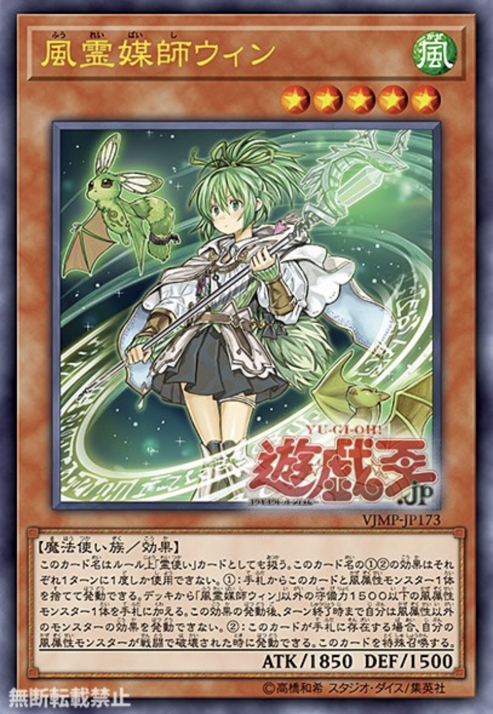

이 카드명은 룰상 령사 카드로도 취급한다. 이 카드명의 ①②의 효과는 각각 1턴에 1번밖에 사용할 수 없다.
①: 패에서 이 카드와 바람 속성 몬스터 1장 을 버리고 발동할 수 있다. 덱에서 풍령매사 윈 이외의 수비력 1500 이하의 바람 속성 몬스터 1장을 패에 넣는다. 이 효과의 발동 후, 턴 종료시까지 자신은 바람 속성 외의 몬스터 효과를 발동할 수 없다.
②: 이 카드가 패에 존재하는 경우, 자신의 바람 속성 몬스터가 전투로 파괴되었을 때에 발동 할 수 있다. 이 카드를 특수 소환한다.